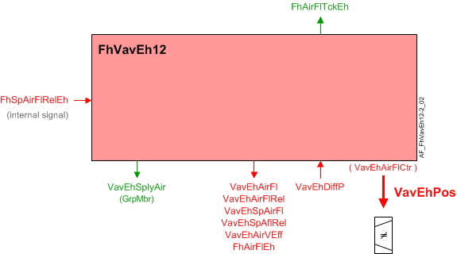

通风柜排气VAV箱、压力传感器、管道区域(FhVavEh12)
Overview
应用功能》Fume hood exhaust air VAV 12, differential pressure sensor, duct area, internal air flow controller, damper" (FhVavEh12）根据排出气流（VavEhAirFl）和排气流量设定值（VavEhSpAirFl）。排气流量是根据压差传感器输入和管道面积计算得出的。排气管面积根据管道形状和尺寸计算。
该 AF 的主输出是一个调制单模拟输出 (AO)，代表排气风门位置（VavExPos）作为全开的百分比。
主要特点：
- VAV extract damper modulation for non critical room pressurization
- Extract airflow setpoint calculation
- Extract airflow calculation
- Airflow coefficient calculation (air balancing logic)
Function
下图显示了与此应用程序函数关联的 BACnet 对象。主要信号流程总结如下：
Basic function:通风柜排风量设定值 (FhSpAirFlRelEh ORVavEhSpAirFl) 被接收并处理为 VAV 排气风门位置的输出信号 (VavEhPos).

| 命令或请求（或相关） |
| 条件或状态或可用性的通知 |
| 设备模式 |


Fume hood mode
通风柜运行模式是一个多状态过程值对象，其状态由通风柜占用状态、有效管理模式、火灾报警、紧急报警和紧急报警定时器的状态决定。通风柜模式由设定值 VAV 和 ODP AFs 使用。
在除“打开”之外的每种模式下，AF 都会操作风门以将测量的气流驱动到设定点。在打开模式下，AF 命令风门打开 100%，无论设定值或测量流量如何。
风门命令的优先级反映了通风柜模式的优先级。
Airflow Control loop
Airflow setpoint: 设定点 AF 传达相对排气流量设定点，以标称流量的百分比表示。最小和最大气流设定点（VavEhAirFlMin和VavEhAirFlMax）在此 AF 中输入，并作为设定点 AFs 的输出提供，以支持每个通风柜具有多个端子的可能性。
Feedback loop: 反馈控制器驱动 AO 对象（VavEhPos）对于阻尼器。 PID 控制器工作于相对气流设定点（VavEhSpAflRel）和相对风量流量（VavEhAirFlRel).
PID 控制器固定在调制模式。如果需要，可以通过提供 2 位设定点信号来实现两位操作。
Flow sensor failure: 如果气流传感器对象无效（不包括 OVER_RANGE），则流量控制风门位置将根据配置扩展的设置进行设置AirFlFailMod.
- If AirFlFailMod is set to Hold, the damper will stay in the current position.
- If AirFlFailMod is set to Open, the damper position will be set to 100%.
当传感器发生故障时，PID 操作将暂停。当传感器状态再次有效时，PID 恢复运行。
当气流对象的可靠性属性指示OVER_RANGE时，风门继续正常闭环控制。
Sensor calibration:当气流传感器处于主动校准状态时，闭环流量控制暂停；输出不会改变。校准仅在稳态控制期间进行，而不是在流量设定值变化时进行。
Airflow sensing: AF 根据测量的压差值计算体积气流，并支持与气流传感器相关的其他功能。它支持与空气平衡相关的手动操作，并与 APS 和其他压力传感器配合使用，包括自动归零功能。 AF 不包括将传感器归零的计算或数据。
Low sensor value: 配置设置指定开启点和以压力为单位的滞后值。
Failed DP sensor:AF 设置气流对象的可靠性以匹配压力传感器对象的可靠性（VavEhDiffP）。如果传感器不可靠，气流计算将继续。但是，气流值可能不会更改，因为 AI 的值停止更新。
Duct area calculation:管道面积是根据配置数据计算的。
Airflow coefficient:气流系数为配置数据（VavEhFlCoefCal）。用户可以直接输入系数或输入自己的独立气流读数，并让 AF 计算和设置流量系数。
Air balancing:平衡功能与气压功能无关。空气平衡功能是：
- Set flow setpoint according to selected balancing mode.
- Calculate duct area.
- Calculate flow coefficient.
- Apply airflow coefficient.
- Restore automatic operation.
- Record data for balancing report.
平衡模式的状态有最大、最小、手动。平衡功能与房间增压功能无关。当平衡器执行平衡步骤时，预计房间可能会失去压力。
Supply chain interface: 有两个供应链输出信号。
Airflow deviation signal:送风气流偏差（VavEhAirFlDvn) 信号（以百分比表示）用于空气处理机组的风扇速度（静压）重置策略。它是通过测量送风管道的气流并将其与气流设定值进行比较而获得的。
VavEhAirFlDvn = VavEhSpAflRel减VavEhAirFlRel
VavEhAirFlDvn如果条件无效，则等于 0。
Saturation signal:饱和信号VavEhAflStrtn是一个二进制对象，当气流控制回路在超过内置时间延迟的时间内无法获得足够的空气来达到设定点时，该对象为 True（“饥饿”）。延迟结束后，开环操作开始。
Note
VavEhAflStrtn如果参数始终关闭EnStrtnCal= 0（否）。这允许用户从饱和压力重置系统中排除特定终端。
In order for Saturation Signal to be True:
1. 启用饱和度校准参数必须设置为是 (EnStrtnCal=Yes)
2. VAV控制器的输出必须大于饱和电平(VavEhAirFlCtr>StrtnLvl)
3. 气流误差，即设定值减去气流值，必须大于气流误差限值 (AirFlEr>AirFlErLm)
仅当在 DlyOnStrtn 持续时间内满足所有三个部分时，饱和信号才能为 True。
在此应用程序功能中输入最小和最大气流设定值。段中的组成员对象将值传输到房间应用程序。
Airflow tracking: FhAirFlTckEh是告诉房间控制器有多少空气通过通风柜从房间排出的输出信号。气流跟踪值将设置为等于排气设定点或基于当前警报状态、死区配置以及测量流量与设定点比率的过滤测量体积。
死区配置扩展项以标称排气量设置的百分比形式输入，并用于计算死区。
FhAirFlTckEh当满足以下所有条件时，将设置为等于排气量设定点：
- Fume hood emergency alarm, high alarm, and low alarm are off.
- The configuration extension item for the deadband is greater than 0.0.
- VavEhAirFl is less than HighValue and VavEhAirFl is greater than Low Value.
当上述条件不存在时，FhAirFlTckEh将被设置为等于测量的体积。
Feature configuration
特征选择“Room HVAC coordination" 通过配置组件中的应用程序配置任务进行访问。
Feature (AF) | 功能描述 | 参考号 |
|---|---|---|
Trend for fume hood exhaust air volume flow | None/Active | ☑ |
Configuration
 Objects
Objects
描述 | 目的 | 类型 | 默认值 |
|---|---|---|---|
Exhaust air VAV balancing state 1:Initial | VavEhBalSta | MCnfVal | 1:Initial |
Exhaust air VAV balancing mode 1:Maximum exhaust air | VavEhBalMod | MCnfVal | 1:Maximum exhaust air |
Exhaust air VAV air volume flow at hood | VavEhAirFlHood | ACnfVal | 100 [m3/h] |
Exhaust air VAV recorded balancing mode 1:Maximum exhaust air | VavEhBalModRec | MCnfVal | 1:Maximum exhaust air |
Exhaust air VAV recorded air volume flow at hood | VavEhAflHodRec | ACnfVal | 0 [m3/h] |
Exhaust air VAV recorded flow coefficient 0…2 | VavEhFlCoefRec | ACnfVal | 0 |
Exhaust air VAV initial flow coefficient 0...2 | VavEhFlCoefIni | ACnfVal | 0 |
Exhaust air VAV recorded air volume flow | VavEhAirFlRec | ACnfVal | 0 [m3/h] |
Exhaust air VAV recorded position | VavEhPosRec | ACnfVal | 0 [%] |
Exhaust air VAV duct area 0...1 [m2], 0.00...10.76 [英尺2] | VavEhDuctArea | ACnfVal | 0.05 [m2] |
Exhaust air VAV duct shape 1:Rectangular | VavEhDuctShape | MCnfVal | 2:Round |
Exhaust air VAV dimension A 0...100 [厘米], 0.0...39.4 [英寸] | VavEhDmsnA | ACnfVal | 20 [cm] |
Exhaust air VAV dimension B 0...100 [厘米], 0.0...39.4 [英寸] | VavEhDmsnB | ACnfVal | 20 [cm] |
Exhaust air VAV flow coefficient 0...2 | VavEhFlCoef | ACnfVal | 0.78 |
Exhaust air VAV maximum air volume flow | VavEhAirFlMax | ACnfVal | 100 [m3/h] |
Exhaust air VAV minimum air volume flow | VavEhAirFlMin | ACnfVal | 50 [m3/h] |
 Parameters
Parameters
描述 | 范围 | 默认值 |
|---|---|---|
Failure mode for air volume flow sensor 0:Hold extract air volume flow | AirFlFailMod | 1:Open extract air volume flow |
Switch-on point for differential pressure | SwiOnPtDiffP | 0.2 [Pa] |
Hysteresis for differential pressure | HysDiffP | 0.1 [Pa] |
Time constant for air volume flow | TiConAirFl | 0 [s] |
Nominal air volume flow | AirFlNom | 0 [m3/h] |
Switch delay for tracking method to air volume flow | SwiDlyTckMthd | 5 [s] |
Switch tolerance for tracking method to air volume flow | SwiTolTckMthd | 5.0 [%] |
Enable deviation calculation 0:No | EnDvnCal | 1:Yes |
Enable saturation calculation 0:No | EnStrtnCal | 1:Yes |
Saturation level | StrtnLvl | 90 [%] |
Air volume flow error limit | AirFlErLm | 0 [%] |
Switch-on delay saturation | DlyOnStrtn | 60 [s] |
Pressure unit | PUnit | [Pa] |
Air volume flow unit | AirFlUnit | [m3/h] |
Interface
界面 | 描述 | 类型 | 参考号 | 拥有者 |
|---|---|---|---|---|
VavEhPos | Exhaust air VAV position | AO | ◉ | Room segment / Field device |
VavEhDiffP | Exhaust air VAV differential pressure | AI | ◉ | Room segment / Field device |
VavEhAirVEff | Exhaust air VAV effective air velocity | ACalcVal | ● | - |
VavEhSpAirFl | Exhaust air VAV setpoint for air volume flow | APrcVal | ● | - |
VavEhSpAflRel | Exhaust air VAV setpoint for relative air volume flow | ACalcVal | ● | - |
VavEhAirFl | Exhaust air VAV air volume flow | ACalcVal | ● | - |
VavEhAirFlRel | Exhaust air VAV relative air volume flow | ACalcVal | ● | - |
VavEhAirFlDvn | Exhaust air VAV air volume flow deviation | ACalcVal | ● | - |
VavEhAflStrtn | Exhaust air VAV air volume flow saturation 0:Satisfied | BCalcVal | ● | - |
VavEhAirFlCtr | Exhaust air VAV air flow controller | 控制器 | ● | - |
FhAirFlTckEh | Fume hood exhaust air volume flow tracking | ACalcVal | ● | - |
FhAirFlEh | Fume hood exhaust air volume flow | ACalcVal | ● | - |
TrndFhAirFlEh | Trend for fume hood exhaust air volume flow | FtrSel | ● | - |
VavEhFlCoefCal | Exhaust air VAV calculated flow coefficient | ACalcVal | ● | - |
VavEhBalCmd | Exhaust air VAV balancing command 1:Ready | MTrgVal | ● | - |
VavEhSplyAir | Exhaust air VAV supply chain for air | GrpMbr | ● | - |
VavEhBalSta | Exhaust air VAV balancing state 1:Initial | MCnfVal | ● | - |
VavEhBalMod | Exhaust air VAV balancing mode 1:Maximum exhaust air | MCnfVal | ● | - |
VavEhAirFlHood | Exhaust air VAV air volume flow at hood | ACnfVal | ● | - |
VavEhBalModRec | Exhaust air VAV recorded balancing mode 1:Maximum exhaust air | MCnfVal | ● | - |
VavEhAflHodRec | Exhaust air VAV recorded air volume flow at hood | ACnfVal | ● | - |
VavEhFlCoefRec | Exhaust air VAV recorded flow coefficient | ACnfVal | ● | - |
VavEhFlCoefIni | Exhaust air VAV initial flow coefficient | ACnfVal | ● | - |
VavEhAirFlRec | Exhaust air VAV recorded air volume flow | ACnfVal | ● | - |
VavEhPosRec | Exhaust air VAV recorded position | ACnfVal | ● | - |
VavEhDuctArea | Exhaust air VAV duct area | ACnfVal | ● | - |
VavEhDuctShape | Exhaust air VAV duct shape 1:Rectangular | MCnfVal | ● | - |
VavEhDmsnA | Exhaust air VAV dimension A | ACnfVal | ● | - |
VavEhDmsnB | Exhaust air VAV dimension B | ACnfVal | ● | - |
VavEhFlCoef | Exhaust air VAV flow coefficient | ACnfVal | ● | - |
VavEhAirFlMax | Exhaust air VAV maximum air volume flow | ACnfVal | ● | - |
VavEhAirFlMin | Exhaust air VAV minimum air volume flow | ACnfVal | ● | - |
Engineering and commissioning
检查风门执行器安装是否正确。执行器接线错误或安装不当是常见问题的主要原因。
相对气流 (VavExAirFlRel) 根据箱体气流 (AirFlNom) 的标称（额定）值标准化为 VavExAirFl 的百分比 (0 - 100%)。